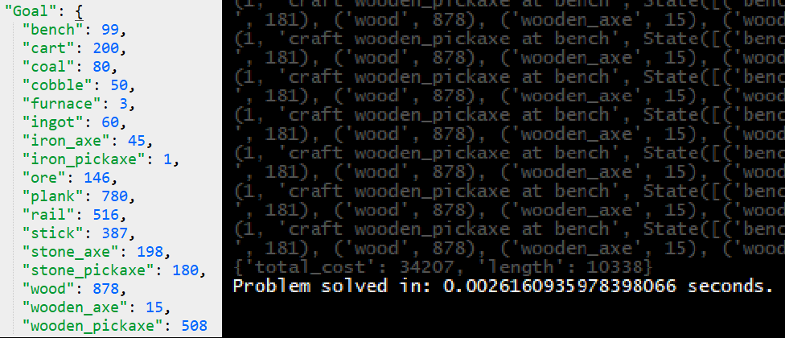

AI Projects (Python)
I studied Game AI at the University of California: Santa Cruz, a hotbed for Expressive AI pioneering and home to influential figures such as Michael Mateas, the co-creator of Façade. Here are some examples of work I did:
Standard Behavior Tree architecture implemented to make a bot that plays Space Wars.
Does a reverse search to plan a series of crafting actions that will yield the desired state. With a set of 17 different craftable items and 25 different actions, algorithm is able to calculate a solution for any goal state in less than 1/100 of a second.
Chooses best place to expand tree of actions, simulates the game using a set of heuristics to obtain a result, then propagates the result back through all the actions that led to it. Actions are then chosen based on how likely they will lead to victory.
The user defines a set of constraints for the puzzle: where teleporters go, where the puzzle starts, and where there must be a floor or wall tile. The tool then runs a Depth First Search and generates all puzzles that satisfy the user-defined constraints.
Traversable area is precompiled into a navmesh. Bidirectional A* is used to find a path.